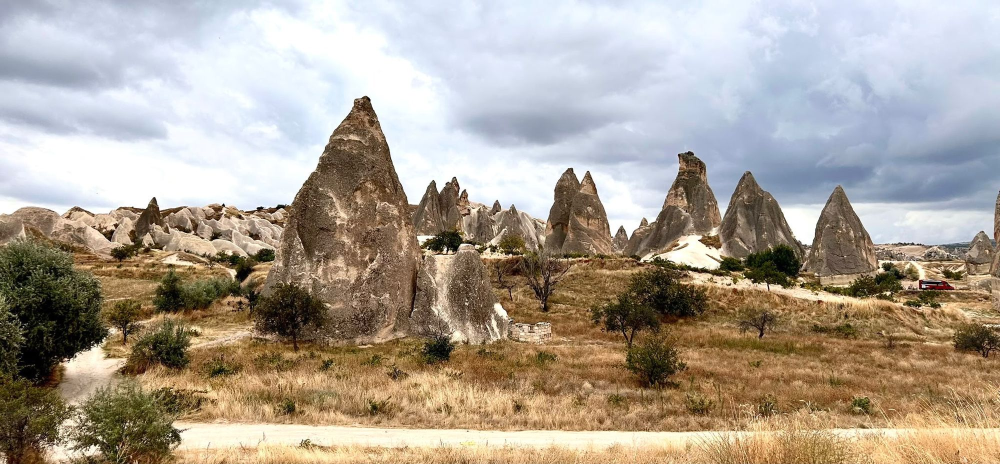

Dag 1 · Cappadocië
Peri bacaları
Turks · schoorstenen van de feeën
Een lage grijze lucht boven tientallen rotskegels. Het landschap vroeg om een verklaring — eerst kwam het sprookje.
Reis III · Anatolië
Een hoogvlakte vol rotskegels onder een lage lucht — een land dat begint met een landschap dat niet van deze planeet lijkt.
1 entry · vanaf 29 oktober · Turks

Dag 1 · Cappadocië
Turks · schoorstenen van de feeën
Een lage grijze lucht boven tientallen rotskegels. Het landschap vroeg om een verklaring — eerst kwam het sprookje.